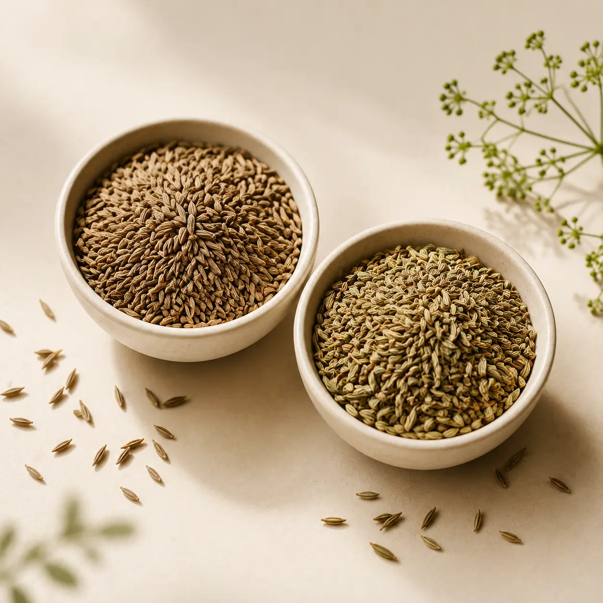

Difference Between Cumin & Caraway
Cumin and caraway seeds look similar and get mixed up often — here's how to tell them apart and when each one belongs in your cooking.
Cumin and caraway are two different plants, but their seeds are similar enough in size and shape that they're commonly confused, especially when buying loose spices.
Cumin seeds are a light, sandy brown and have a warm, earthy, slightly peppery flavour. They're a staple in Indian cooking, used whole for tempering (tadka) or ground into masalas.
Caraway seeds are darker, more curved, and have a distinct anise-like, slightly sweet flavour — closer to fennel than to cumin. They're used far less in Indian cooking and more commonly in European breads and pickles.
If a recipe calls for jeera (cumin), reach for the lighter, straighter seed with the earthy smell — not the darker, curved one that smells faintly of liquorice.